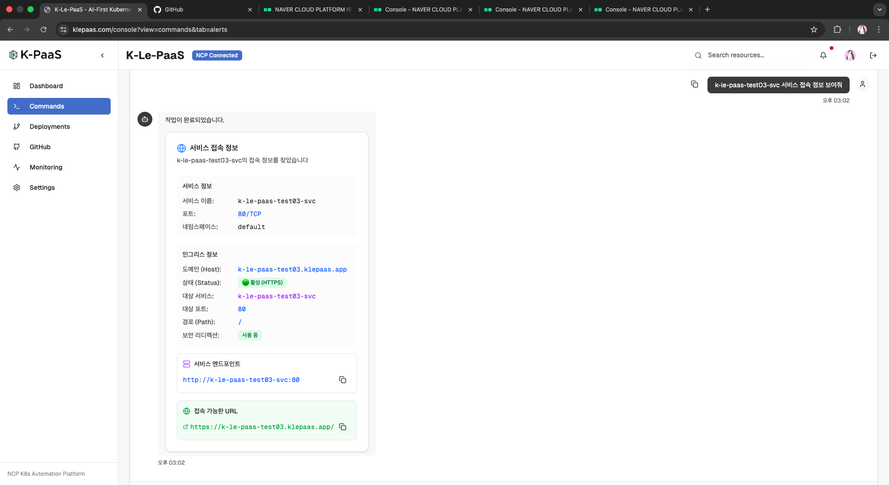
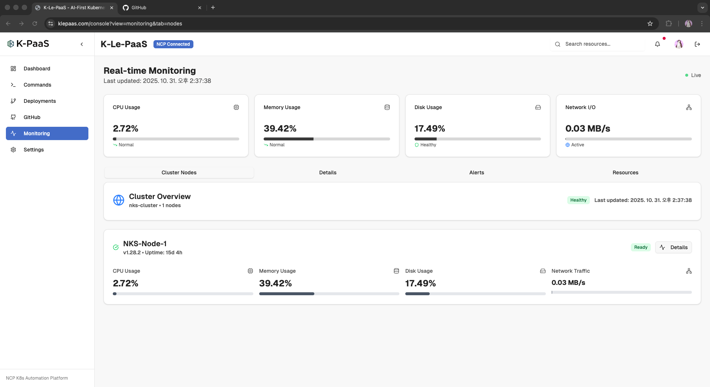

Heimdall
Preview Deployment
Exact commit을 빌드하고 health와 route를 확인한 뒤 Preview를 전환합니다.
DEPLOY
Git 기반 Preview 배포와
Kubernetes·Proxmox 운영 도구를 구현합니다.
Git commit을 Docker Preview로 배포하고, 자연어 명령을 Kubernetes 작업으로 연결하며, Proxmox VM 변경 결과를 다시 확인하는 도구를 만들었습니다.
Exact commit을 빌드하고 health와 route를 확인한 뒤 Preview를 전환합니다.
DEPLOY자연어 요청을 Kubernetes 조회·실행 API와 외부 URL 흐름으로 연결했습니다.
OPERATEAPI 작업은 task와 실제 상태를, guided 작업은 after-state를 다시 확인합니다.
VERIFYProxmox VE 3-node
IPFire segmentation
NAS / NFS
WireGuard / OCI proxy
K-Le-PaaS에서 운영 흐름을 연결하며 남은 ‘실행 뒤 무엇을 성공이라 할 것인가’라는 질문을, 개인 프로젝트에서는 배포와 Proxmox 운영이라는 서로 다른 책임으로 나눠 다뤘습니다.
자연어 요청, Kubernetes 실행, 외부 URL과 모니터링 결과를 하나의 운영 경험으로 연결했습니다.
commit과 설정을 고정하고 candidate health와 적용된 route를 probe한 뒤 active Preview를 확정합니다.
API 작업과 guided 작업을 각기 다른 실행·사후 확인 절차로 마무리합니다.
Gjallar는 초기 Heimdall snapshot에서 Proxmox 운영으로 재정의됐고, 현재 Heimdall Python은 이후 별도로 재구축됐습니다.
HEIMDALL
공개 GitHub 저장소의 main commit을 격리된 Docker candidate로 빌드하고,
health 확인과 적용된 route의 probe를 통과한 경우에만 active Preview로 확정합니다.
Public GitHub · fixed main · manual deployment · single Docker host
ROLE설계 / FastAPI 백엔드 / 배포 Worker / React UI
STACKGit · Docker · NGINX · FastAPI · React · PostgreSQL
VERIFIED PROMOTION
배포 대상을 먼저 고정하고, 기존 Preview와 분리된 환경에서 candidate service를 확인합니다. NGINX route 적용 뒤 실제 endpoint 응답까지 확인해야 active metadata가 확정됩니다.
repository
service · env
route · health
exact commit
immutable
configuration
exact checkout
service image
isolated candidate
service health
candidate config
readiness check
NGINX apply
route probe
active metadata
프로젝트 설정, immutable snapshot, job event, 제한된 진단 로그
Docker socket은 Worker에만 연결하고 API와 실행 권한을 분리
candidate와 active Preview runtime을 분리하고 route 적용 뒤 endpoint를 확인
IMPLEMENTATION NOTE Control Plane Compose와 프로젝트별 Preview runtime은 수명 주기와 권한이 분리되어 있습니다.
FAILURE IS A STATE
NGINX route를 적용한 뒤 probe가 실패하면 active Preview metadata를 확정하지 않고 기존 정상 route의 복구를 시도합니다.
실패한 재배포 뒤에도 기존 deployment ID, host port, HTTP response가 유지되는 경로를 통합 테스트로 확인했습니다.
runtime 상태가 불명확하면 자동 성공이나 즉시 삭제로 단정하지 않고 reconciliation이 필요한 상태로 보존합니다.
K-LE-PAAS
웹과 Slack의 자연어 요청을 Kubernetes와 NCP 운영 흐름에 연결하고, 실행 결과와 접근 정보를 다시 전달하는 팀 기반 클라우드 운영 플랫폼입니다.
Web · Slack
natural language
intent · entity
CommandPlan
Kubernetes
NCP workflow
result · URL
metrics
CONTEXT한국인공지능·소프트웨어산업협회 Cloud 과정 팀 프로젝트
STACKKubernetes · Gemini · FastAPI · Prometheus · WebSocket · NCP
MY CONTRIBUTION
Gemini가 해석한 요청을 intent와 entity로 구조화하고 상태·로그·외부 URL·재시작·스케일링·버전 롤백·리소스 조회 함수와 연결했습니다.
Ingress 외부 주소와 NCP SourceDeploy 흐름의 사용자·저장소별 service URL을 생성하고 저장·조회하는 경로를 구현했습니다.
Prometheus의 CPU·memory·disk·network 지표를 API와 WebSocket endpoint로 제공했습니다.
TEAM SCOPE 웹 콘솔, 인증, 전체 배포 pipeline, Slack 연동은 팀이 함께 구성했습니다.

서비스 정보와 Ingress host를 HTTPS URL로 구성해 하나의 결과 카드에 표시합니다.
IMPLEMENTATION REFERENCES
팀 제품의 전체 기능과 개인 기여를 분리하고, 대표 구현을 세 개의 PR로 구분했습니다.

NKS node의 CPU, memory, disk, network 값을 Prometheus에서 조회해 실시간 화면으로 연결했습니다.
GJALLAR
Preview를 활성화하는 판단과 Proxmox의 실제 인프라를 변경하는 판단은 필요한 권한, 실패 방식, 성공을 확인하는 기준이 다릅니다.
Gjallar는 Proxmox 운영만을 다루는 별도 control surface로 제품 책임을 좁혔습니다.
OPERATION MODEL
운영 도구의 데이터가 실제 인프라 상태를 대신하지 않도록, 기록해야 할 것과 다시 조회해야 할 것을 나눴습니다.
Gjallar가 Proxmox API 작업을 실행하고 task와 변경 후 상태를 확인합니다.
짧은 유효시간의 지침만 발급하고, 작업은 운영자가 직접 수행한 뒤 API로 결과를 확인합니다.
capacity와 placement 신호는 조회 시 계산하며 자동 조치나 자동 balancing으로 이어지지 않습니다.
SUCCESS NEEDS EVIDENCE
각 작업의 위험과 실행 방식에 맞는 확인 절차를 적용하고, Proxmox가 보여주는 변경 후 상태를 다시 조회합니다.
성공으로 바꾸거나 자동 재실행하지 않고 상황에 따라 failed 또는 needs_reconciliation로 남깁니다.
프로세스 비정상 종료 뒤의 완전한 자동 복구는 현재 지원하지 않습니다.
NARROW BY DESIGN
지원하지 않는 작업까지 넓게 설명하기보다, 현재 구현하고 자동 테스트한 mutation과 조회 범위를 제품 경계로 명시했습니다.
Production runtime은 mock 또는 demo inventory로 대체하지 않습니다.
qm executor기존 DRS route는 read-only 추천·검사와 좁은 migration/reconciliation 호환 경로로 남아 있지만, 현재 제품 정체성은 VM 운영과 공통 operation 기록에 둡니다.
WHAT I LEARNED
실행 전에 commit, configuration, plan을 고정합니다.
API 응답과 실제 resource 상태를 분리해서 확인합니다.
확인할 수 없는 상태를 성공으로 단정하지 않습니다.
현재 지원 범위와 다음 단계의 기능을 구분합니다.
Heimdall
DNS + reverse proxy
Proxmox 3 nodes
NAS / NFS storage
WireGuard gateway
public service VMs
allowed
ORANGE → RED / GREENblocked
Heimdall의 single-host 배포와 Gjallar의 이전 Create VM 흐름은 홈랩에서 확인했습니다. Gjallar의 현재 Operations 구조는 자동 테스트와 production build로, K-Le-PaaS는 팀 NKS/NCP 환경에서 구현했습니다.
CLOSING NOTE
더 많은 기능보다 명확한 책임, 안전한 실행 경로, 확인할 수 있는 결과를 만드는 엔지니어입니다.